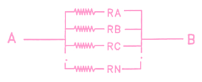

Chapter
Working with Vectors
APL2 collects data in arrays. Every function in APL2 applies to arrays and produces an array as a result. The simplest arrays are simple scalars. They contain a single number or a single character. Other arrays contain numbers, characters, or mixtures of numbers and characters. This chapter presents the fundamentals of array manipulation by concentrating on vectors—linear arrangements of data. Chapter 5 applies the discussion to other arrays.
APL2 provides functions that measure and produce vectors, which may contain numbers or characters, or both, or which may be empty of data. APL2 broadens the arithmetic functions and extends them to vectors.
Section 2.1 — Functions that Produce Vectors§
A vector is the simplest data structure that can contain more than one item. This section presents three functions for measuring and producing vectors:
- shape
- interval
- catenate
Measuring the Size of a Vector: Shape§
The monadic function shape (⍴), when applied to a vector, tells you how many items are in the vector. The number of items is the length of the vector:
⍴ 10 20 30 440
4
PRICE←(6.95 2.5) (7.95 3.55 295) 12.95
⍴PRICE
3
The shape of the shape of an array is the rank of the array:
⍴⍴ 10 20 30 40
1
⍴⍴PRICE
1
Thus, the shape of a vector is a one-item vector and a vector has rank 1.
Chapter 5 discusses the ranks of all arrays.
Producing Consecutive Integers: Interval§
Here’s an example of a function that produces a vector of numbers from a single number:
⍳6 1 2 3 4 5 6
This function, called interval, generates a vector whose items are an increasing sequence of consecutive integers starting with 1 and ending with the requested integer. The shape of the result of interval is the same value as the right argument:
⍴⍳6 6
When the mathematician Gauss was a student, he was asked to add up the first hundred integers as a punishment. He noted that 100+1 is 101, 99+2 is 101, and that there are 50 such pairings. He immediately wrote down the answer— 50×101 or 5050— to the amazement of the teacher. Using APL2, you need not be so clever. You merely enter this:
+/⍳100 5050
You can generate any sequence of equally spaced numbers by a simple expression using interval. The argument of interval is the length of the sequence. Multiply by the difference between two numbers, and add a constant to make the first item right:
constant + increment × ⍳ length
Such a sequence of numbers is an arithmetic progression. This expression yields the first six even integers:
2×⍳6 2 4 6 8 10 12
To obtain six even integers starting with the number 10, you enter this expression:
8+2×⍳6 10 12 14 16 18 20
Multiplying by a negative number gives a decreasing progression:
¯1×⍳6
¯1 ¯2 ¯3 ¯4 ¯5 ¯6
7+¯1×⍳6
6 5 4 3 2 1
Joining Vectors: Catenate§
APL2 provides the function catenate to join two arrays. This example shows how catenate works to save time and reduce chances of errors.
RETAIL is the name previously assigned to represent the cost of long-playing records, cassette tapes, and compact discs at a record store:
RETAIL←6.95 7.95 12.95
Now the store begins to sell video disks and video tapes, so RETAIL should be a five-item vector rather than a three-item vector. You can redefine the value:
RETAIL←6.95 7.95 12.95 25.95 15.85
However, if RETAIL had hundreds of items, it would not be realistic to redefine the value of the variable every time you need to add items. Redefining over and over again would be inefficient and error-prone.
The function catenate (,) takes two arrays and joins them end to end to form one array. Thus, instead of retyping the values in RETAIL, you can just join new numbers to the existing numbers. First, restore the original value of RETAIL. Then use catenate to append the new values:
RETAIL←6.95 7.95 12.95
RETAIL←RETAIL,25.95 15.95
Now RETAIL has the desired value:
RETAIL 6.95 7.95 12.95 25.95 15.95
Catenate Versus Vector Notation§
You should carefully note the difference between using catenate to append numbers to a list and using vector notation.
In simple cases, catenate and vector notation produce the same result as in this example:
5,7
5 7
5 7
5 7
The results of these simple expressions might fool you into thinking that vector notation implies catenation. A slightly more complicated example illustrates a difference:
5,7+10
5 17
5 7+10
15 17
These two expressions differ only by a comma. Remember that in APL2 comma represents a function, not punctuation. The left argument of addition is the scalar 7 in the first case and 5 7 in the second case. APL2 always forms vectors with vector notation, if it can, before applying functions.
As a further example, look at these expressions involving the variable RETAIL, set back to its original value:
RETAIL←6.95 7.95 12.95
RETAIL,25.95 15.95
6.95 7.95 12.95 25.95 15.95
⍴RETAIL,25.95 15.95
5
RETAIL 25.95 15.95
6.95 7.95 12.95 25.95 15.95
⍴RETAIL 25.95 15.95
3
The expression with catenate joins the three values in RETAIL to the two new values giving a five-item result. In the display of this result, single blanks separate the items.
The expression with vector notation forms a three-item list whose first item is the value of RETAIL and whose second and third items are the numbers given. In the display of this result, two blanks separate the group of three that comes from RETAIL from the others.
The use of DISPLAY shows the difference more explicitly:
DISPLAY RETAIL,25.95 15.95
.→--------------------------.
|6.95 7.95 12.95 25.95 15.95|
'∼--------------------------'
DISPLAY RETAIL 25.95 15.95
.→-----------------------------.
| .→--------------. |
| |6.95 7.95 12.95| 25.95 15.95|
| '∼--------------' |
'∊-----------------------------'
Exercises for Section 2.1[Answers]§
Evaluate the following expressions:
⍳5⍳5+22+⍳5¯2+⍳5−2+⍳52×15.5×⍳5¯2+.5×⍳5−2+.5×⍳5
Evaluate the following expressions:
20 30 + 4 520 30 + 4,520,30 + 4 520,30 + 4,520,30 + (4,5)(20,30) + 4 5(20,30) + (4,5)(10 20 + 30) + 4 5(10,20 + 30) + 4 5
Write an expression using interval to generate each of the following vectors:
7 12 17 22 27 32¯1.7 ¯1.4 ¯1.1 ¯.8 ¯.5 ¯.2¯1.5 ¯.75 0 .75 1.5 2.25
Write an expression to generate the first ten odd numbers.
Write a progression to produce the following:
- A simple vector of the first five even numbers followed by the first five odd numbers.
- A two-item vector, whose first item is the first five odd numbers and whose second item is the first five even numbers.
Let
MONTHSbe a vector that contains the maximum monthly temperatures in Celsius for the first three months of the year.MONTHS← 9 13 18
If the maximum monthly temperature for April is 65 degrees Fahrenheit, write a single expression to include in
MONTHthe maximum April temperature in Celsius.Evaluate the following expressions:
⍴(⍳5),10 20⍴(⍳5) 10 20⍴(⍳5),(10 20)⍴(⍳5) (10 20)
Section 2.2 — Character Data§
You write a character as a symbol surrounded by single quotation marks. Unlike numbers, where one value may have many representations, there is only one way to write a given character as a constant: the graphic for the character surrounded by single quotation marks. For example, you write the character that begins this sentence as follows:
'F' F
The single quotation marks on input are punctuation and indicate the presence of a character. They are not part of the data and so are not displayed when APL2 displays the character data.
You write a blank character as a single space surrounded by single quotation marks:
' '
A single character is a simple scalar.
Character Vectors§
To construct a character vector, you can write the individual characters in quotation marks separated by blanks. This expression is a three-item vector of characters:
'A' 'B' 'C' ABC
A simple vector containing only characters is a character string.
When every item of a vector is a simple character scalar, there is a more compact notation for writing the vector. The vector:
'A' 'B' 'C'
may be written as:
'ABC'
This compact notation is permissible as long as the three characters are not part of a longer vector. For example:
'A' 'B' 'C' 'D'
is not
('A' 'B' 'C') 'D'
or
'ABC' 'D'
The first expression is not equivalent to the other two expressions. The first expression is a four-item simple character vector (which could be written as 'ABCD'). The second and third expressions are equivalent.
The rewriting rule for simple character vectors extends to give a compact notation for writing a vector of character vectors:
('J' 'I' 'M') ('J' 'O' 'H' 'N')
JIM JOHN
may be written
'JIM' 'JOHN' JIM JOHN
To construct a character string that itself contains the single quotation mark, you must write the single quotation mark twice. For example, this is the way you would assign the word don’t to the variable W:
W←'DON''T'
W
DON'T
W contains five characters:
⍴W 5
In the expression that assigned W, the outermost quotation marks delimit the data and the paired inner quotation marks represent a single quote character.
How would you write the scalar constant consisting of a single quotation mark? You write any other scalar character by putting it in quotes:
'A' A
If the character is a single quotation mark, you must double it and then put it within the pair of delimiting quotation marks. That is, to write a scalar character quote, you must enter four quotation marks—the character quotation mark doubled and the required surrounding quotation marks:
'''' '
Vectors with Both Numbers and Characters§
Characters and numbers may exist in the same array. Here are two examples with DISPLAY applied to the results so you can see the structure:
DISPLAY 'LPS',6.95
.→-------.
|LPS 6.95|
'+-------'
DISPLAY 'LPS' 6.95
.→-----------.
| .→--. |
| |LPS| 6.95 |
| '---' |
'∊-----------'
The first expression is a four-item vector with characters as the first three items and a number as the last item. The + along the bottom of the box indicates a mixture of characters and numbers. The second is a two-item vector with a character vector as its first item and a number as the second item. The box surrounding the character vector has no symbol along the bottom.
By using characters and numbers in an array, the record store can keep track of its products and prices in one array:
PRD←('LPS' 6.95)('TAPES' 7.95)('CDS' 12.95)
PRD
LPS 6.95 TAPES 7.95 CDS 12.95
DISPLAY PRD
.→------------------------------------------------.
| .→-----------. .→-------------. .→------------. |
| | .→--. | | .→----. | | .→--. | |
| | |LPS| 6.95 | | |TAPES| 7.95 | | |CDS| 12.95 | |
| | '---' | | '-----' | | '---' | |
| '∊-----------' '∊-------------' '∊------------' |
'∊------------------------------------------------'
Functions that Work on Characters§
You can apply functions that don’t do some sort of calculation to characters. For example, catenate can join any two vectors. In the following example, catenate joins two character vectors:
CV1←'BILLY'
CV2←'JOE'
CV1,CV2
BILLYJOE
This result is a character string containing eight characters.
Functions that do calculation don’t work on characters:
⍳'A'
DOMAIN ERROR
⍳'A'
^
→
Exercises for Section 2.2[Answers]§
Let
A,B, andCbe defined as follows:A←'CAT' B←'DOG' C←'MOUSE'Determine the shape of the vectors resulting from the following expressions. (Remember: form vectors before applying functions.)
A B CA,B,CA B,CA,B C(A B) C(A,B),C(A B),C(A,B) C
Write an expression to create this simple character vector:
I'VE GOT IT!
Create the four-item character vector containing the words “I’VE”, “GOT?”, “IT”, and the punctuation “!”.
Evaluate the following expressions: |
⍴'ABC' 'WXYZ'⍴'ABC','WXYZ'⍴'ABC' (⍳4)⍴('ABC') 'WXYZ'⍴'ABC',(14)⍴('J' 'I' 'M')('J' 'O' 'H‘ 'N')⍴'JIM' 'JOHN'⍴'JIM''JOHN'⍴'JIM','JOHN'
Suppose variables J, S, and W contain the deposit data for J. Jones, S. Smith, and W. White, respectively. Write an expression to collect together under one variable called
DEPOSITSeach name and its corresponding deposit data.
Section 2.3 — Empty Vectors§
All of the vectors produced in examples so far have had one or more items. It is possible to have a vector containing no data and having length zero. Such a vector is an empty vector.
Creating an Empty Vector§
You’ve seen the function interval used to generate a vector of consecutive integers starting with 1. The expression ⍳N produces a vector of length N.
This expression produces a vector of three consecutive integers:
⍳3 1 2 3
This expression gives a vector of one consecutive integer of which there is only one:
⍳1 1
Although it prints like a simple scalar, it is in fact a vector:
DISPLAY ⍳1 .→. |1| '∼'
This expression produces a vector of zero consecutive integers:
⍳0
⍳0 is an empty vector of numbers. The empty vector appears as a blank line on output.
You create an empty character vector by putting no character between quotation marks:
''
Here is DISPLAY applied to empty numeric and character vectors:
DISPLAY ⍳0
.⊖.
|0|
'∼'
DISPLAY ''
.⊖.
| |
'-'
The ⊖ at the top of the box indicates an empty array. The zero inside the box indicates a numeric empty vector, and the blank inside the box indicates a character empty vector.
The length of an empty vector is zero:
⍴⍳0
0
⍴''
0
Using Empty Vectors§
Empty vectors don’t contain data, so you wouldn’t expect to do a lot of useful computing with them. However, they allow you to establish variables that will have non-empty values later on.
You have been using the variable RETAIL to keep track of the prices of objects at the record store. When you want to add more prices, you catenate new values onto the existing list. In a real application, you may be keeping track of many lists of values.
A good scheme in designing such an application is to determine what quantities you want to keep track of and decide on names for each of them. Initialize each name by assigning an empty vector as its value:
WHAT←''
RETAIL←⍳0
DISCOUNT←⍳0
Now when you get some data, you can use catenate to append it to each variable:
WHAT←WHAT,'LPS' 'TAPES' 'CDS'
RETAIL←RETAIL,6.95 7.95 12.95
DISCOUNT←DISCOUNT,.9 .9 1
Scalars are arrays without shape. Thus, if you apply shape to a scalar, the result is a numeric empty vector:
⍴5
⍴'A'
DISPLAY ⍴5
.⊖.
|0|
'∼'
DISPLAY ⍴'A'
.⊖.
|0|
'∼'
The rank of a scalar is zero:
⍴⍴'A' 0
As you learn more APL2, it will become increasingly important for you to know whether a single item array is a scalar or a one-item vector. For example, the result of shape applied to a vector is a one-item vector. That is why applying shape again gives you 1 as the rank of the vector. If the result of shape were a scalar number, applying shape to that scalar would result in an empty vector.
The discussions of functions in this and the remaining chapters tell you the structure of arrays produced by the functions.
Exercises for Section 2.3[Answers]§
- Evaluate the following expressions:
⍴⍳2⍴⍳1⍴⍳0⍴''⍴' '⍴'AB'⍴'A B'⍴'A''B'
- Suppose function
Pis a monadic function which takes as right argument a list of data. Write an expression that will callPwhen the list is empty.
Section 2.4 — Functions that Manipulate Vectors§
You have seen some ways to group data into vectors. APL2 functions, in general, operate on entire arrays all at once. Sometimes you may want to operate on only part of an array. This section presents five APL2 functions for extracting data from vectors and a way to replace items in vectors:
- pick
- first
- take
- drop
- indexing
- selective assignment
Selecting Items from a Vector: Pick§
Given the PRD vector, suppose that only the item describing cassette tapes is of interest.
PRD←('LPS' 6.95)('TAPES' 7.95)('CDS' 12.95)
The following expression uses the function pick (⊃) to select the second item from PRD:
2⊃PRD TAPES 7.95
This result is the two-item vector that is the second item of PRD.
If you want only the name of the second product, you can apply pick twice:
1⊃2⊃PRD TAPES
By using a vector left argument, you can make this selection in a single operation:
2 1⊃PRD TAPES
The left argument means first select the second item ('TAPES' 7.95), then select the first item from that ('TAPES').
A three-item left argument further narrows the selection to one character from the product name:
2⊃1⊃4⊃PRD E
Do you see why the numbers 2 1 4 selected the E in TAPES? The vector of numbers means select the vector that is the second item of PRD. Then select the first item of that vector (giving 'TAPES'). Finally, select the fourth item of that vector ('E').
Selecting Items from a Vector: First§
The monadic function first (↑) selects the leading item of its argument. You can think of first as a special case of pick. The following expression shows the relationship between first and pick. In this book the symbol <--> (not an APL2 symbol) means “equivalent to.”
(↑V) <--> (1⊃V)
Compare the following two expressions, and you’ll see that they produce the same result:
↑PRD
LPS 6.95
⍴↑PRD
2
1⊃PRD
LPS 6.95
⍴1⊃PRD
2
There is another interesting property of first. When applied to empty vectors, it returns an array that identifies the type of data used to construct the empty vector. For example:
↑⍳0
0
↑''
<---(blank)
You may think that first is an unnecessary function, but, you’ll see in Chapter 5 that it is useful with data structures more complicated than vectors.
Selecting Items from a Vector: Take§
When the symbol ↑ has a left argument as well as a right argument, the function performed is take. To select adjacent items in a vector, you indicate in the left argument how many consecutive items to select from the right argument. For example:
4↑'TAPES'
TAPE
3↑5 7 9 11 13
5 7 9
A negative left argument selects consecutive items from the right end of the vector instead of from the beginning:
¯4↑'TAPES'
APES
¯3↑5 7 9 11 13
9 11 13
By successive applications of take, you can select items from the middle of a vector:
3↑¯4↑'TAPES'
APE
2↑¯3↑ 5 7 9 11 13
9 11
If you attempt to take more data than you have from a simple vector, APL2 pads the result with either blanks or zeros, according to whether the first item of the right argument is a character or a number:
¯8↑'TAPES'
TAPES
7↑5 7 9 11 13
5 7 9 11 13 0 0
When you take more that you have from a nested array, the result is padded with items that look like the first item but with numbers replaced with zeros and characters replaced with blanks:
3↑(2 'A' 3) (19 'B' 21)
2 A 3 19 B 21 0 0
DISPLAY 3↑(2 'A' 3) (19 'B' 21)
.→--------------------------.
| .→----. .→------. .→----. |
| |2 A 3| |19 B 21| |0 0| |
| '+----' '+------' '+----' |
'∊--------------------------'
Take applied to a vector always returns a vector result.
1↑'APPLE"
A
⍴1↑'APPLE'
1
Notice the important difference between take and first. First returns the contents of the first item of its argument, which can be any array at all. Take returns a number of items, as specified by its left argument; so a 1↑ produces a one-item vector that contains as its only item the first item of its argument:
↑'LPS' 'TAPES' 'CDS'
LPS
⍴↑'LPS' 'TAPES' 'CDS'
3
DISPLAY ↑'LPS' 'TAPES' 'CDS'
.→--.
|LPS|
'---'
1↑'LPS' 'TAPES' 'CDS'
LPS
⍴1↑'LPS' 'TAPES' 'CDS'
1
DISPLAY 1↑'LPS' 'TAPES' 'CDS'
.→------.
| .→--. |
| |LPS| |
| '---' |
'∊------'
Selecting Items from a Vector: Drop§
With the function drop, you can discard consecutive leading or trailing items:
3↓'TAPES'
ES
3↓5 7 9 11 13
11 13
A negative left argument indicates how many items to discard from the right end of the right argument:
¯2↓'TAPES'
TAP
¯3↓5 7 9 11 13
5 7
Applying drop consecutively allows you to select items from the middle of a vector:
¯1↓2↓'TAPES' PE
If you attempt to drop more data than you have, the result is an empty vector:
10↓'TAPES'
⍴10↓'TAPES'
0
16↓5 7 9 11 13
⍴16↓5 7 9 11 13
0
Drop applied to a scalar or a vector always returns a vector result.
Selecting Items from a Vector: Indexing§
You may select items from a vector by specifying the position of the item in the vector. The operation that does this kind of selecting is indexing. You write, inside square brackets, the numbers that indicate the items selected:
'TAPES'[2]
A
(5 7 9 11 13)[4]
11
Whereas take and drop applied to vectors always return a vector, the array returned by indexing depends on the array used as the index. In the preceding examples, the index is a scalar so the result is a scalar.
The shape of the result is always the same as the shape of the index. This rule for the shape of the result applies even when the array being indexed is nested. For example, in this expression the result is a scalar because the index is a scalar. It is nested because the second item of the array indexed is not a simple scalar:
('SCOTT' 'STACY')[2]
STACY
⍴('SCOTT' 'STACY')[2]
DISPLAY ('SCOTT' 'STACY')[2]
.---------,
| .→----. |
| |STACY| |
| '-----' |
'∊--------'
Here are some examples in which the index is a vector:
'TAPES'[3 2 5 1 4]
PASTE
'TAPES'[1 4 2]
TEA
(5 7 9 11 13)[4 2 1]
11 7 5
If the index is a vector, the result is a vector of the same length.
Notice that parentheses are needed to index a numeric vector constant. This is because square brackets for indexing apply to the array immediately to the left of the brackets. Indexing is evaluated before vectors are formed. Application of this rule explains why the following expression works as you would expect:
A1← 5 7 9 11 13
A2← 10 20 30
A1[2] A2[3] A1(4]
7 30 11
You can select the same item more than once by using its index number more than once:
'TAPES'[5 4 4 3] SEEP
You can do any computation inside the brackets as long as the result is integers that select items from the left argument. Suppose you had a vector of ones and zeros that represented a code. You can convert the vector to Morse code in either of these ways:
CODE←0 0 1 0 1 1
('DOT' 'DASH')[1+CODE]
DOT DOT DASH DOT DASH DASH
'.-'[1+CODE]
..-.--
Because the explicit result of indexing is an array, you can, of course, do further computations on it:
RETAIL←6.95 7.95 12.95
2 4 × RETAIL[1 3]
13.9 51.8
At first glance, indexing with a scalar and pick seem to make selections in the same way. However, they are distinct. Pick gives you the array at the indicated position. Indexing with a scalar, gives you a scalar containing the array at the indicated position. The following example shows the difference in the selection:
('DOT' 'DASH')[1]
DOT
⍴('DOT' 'DASH')[1]
DISPLAY ('DOT' 'DASH')[1]
.-------.
| .→--. |
| |DOT| |
| '---' |
'∊------'
1⊃'DOT' 'DASH'
DOT
⍴1⊃'DOT' 'DASH'
3
DISPLAY 1⊃'DOT' 'DASH'
.→--.
|DOT|
'---'
Replacing Items in a Vector: Selective Assignment§
Any expression that selects items from an array can be written on the left of an assignment arrow to indicate replacement of the selected items. Here are some examples using selection functions you’ve just seen:
PRD←('LPS' 6.95)('TAPES' 7.95)('CDS' 12.95)
2 1⊃PRD
TAPES
(2 1⊃PRD)←'SPOOLS'
PRD
LPS 6.95 SPOOLS 7.95 CDS 12.95
W←'TAPES'
4↑W
TAPE
(4↑W)←'-'
W
----S
W[1 3]←'⎕⌹'
W
⎕-⌹-S
Selective assignment is discussed in more detail in Chapter 6.
Exercises for Section 2.4[Answers]§
Given the following:
A« "ABCD' (10 20 30) ((2 4) (1 3 5))
Evaluate:
⍴A↑A⍴↑A1⊃A⍴1⊃AA[1]⍴Al1]¯1↑A1↓A↑2↓A↑↑2↓A↑↑↑2↓A↑↑↑↑2↓A
For
Adefined in exercise 1, fill in a left argument that selects the value shown as the result:_____⊃A 10 20 30
_____⊃A D
_____⊃A 30
_____⊃A 2 4
_____⊃A 1
For a numeric vector
V, write expressions for the following:- Shift
Vleft two places, replacing the emptied positions with zeros. - Shift
Vright three places, replacing the emptied positions with zeros.
Test your expressions on this vector:
V←10 4.1 7 ¯3.6 5.2 ¯23.6
The answers should look like this:
7 ¯3.6 5.2 ¯23.6 0000 0 10 4.1 7
- Shift
Given the vector
DATA:DATA←('ABC' 25) ('DE' 463) ('FGHI' 87 12)Evaluate:
2⊃DATA2 2⊃DATA3 2⊃DATA3 1⊃DATA3 1 2⊃DATA↑DATA↑↑DATA(↑DATA)[2]DATA[3]
The vector
DIRECTORYis a vector of two-item vectors. The first item is the last name of an individual. The second item is that person’s telephone number, represented as a three-item vector (area code, exchange, and number). For example, the first two items ofDIRECTORYare as follows:DISPLAY 2↑DIRECTORY .→-------------------------------------------------. | .→---------------------. .→--------------------. | | | .→--. .→-----------. | | .→-. .→-----------. | | | | |ITO| |212 555 1234| | | |EX| |312 555 9797| | | | | '---' '∼-----------' | | '--' '∼-----------' | | | '∊---------------------' '∊--------------------' | '∊-------------------------------------------------'
Write expressions for the following:
- The name and telephone number for the second entry.
- The area code for the first entry.
- The name from the first entry.
- The name from the second entry.
Write an expression to select BUT from the word TRIBUTARY.
Given the following variables:
CH←'AAABCDEF' DAT←'ABC' (⍳4) 'DEFG' (10 20 30) 'IJ' (7 9)Evaluate the following expressions:
CH[3]CHL3 1 2]CH[¯1+2×⍳3]DAT[3 4]DAT[2+⍳4]
Section 2.5 — Scalar Functions§
APL2 applies a scalar function to each simple scalar in its argument or arguments. You have already seen some scalar functions: addition, subtraction, negation, multiplication, and division. The other functions you have seen—interval, catenate, pick, first, drop, and indexing—are not scalar functions.
This section discusses scalar functions in general and introduces these additional scalar functions:
- power
- maximum
- minimum
- floor
- ceiling
- magnitude
- direction
- residue
- reciprocal
Scalar Conformability and Scalar Extension§
APL2 defines the scalar functions first on simple scalar arguments. Here is addition applied between two simple scalars:
2 + 5 7
When you apply a scalar function between arguments that are not simple scalars, APL2 decomposes the operation into simpler cases until finally it applies the function between simple scalars.
When arguments have the correct shape for a function (as opposed to the correct values), the arguments conform. For a dyadic scalar function, arguments of the same length conform. For example, the following expression shows addition applied between conforming vectors, giving a result whose shape matches the shape of the arguments:
2 3 4 + 5 6 7 7 9 11
APL2 evaluates addition between conforming vectors by applying the function between corresponding items, one from each argument. The items are paired as follows:
(2+5) (3+6) (4+7) 7 9 11
The preceding expression reduces the vector addition into three simple scalar additions.
If neither of the arguments is a scalar, the arguments must have the same length. Otherwise, a LENGTH ERROR results:
3 5+2 1 7
LENGTH ERROR
3 5+2 1 7
^ ^
Here is an example of subtraction that, when applied between conforming vectors, still results in an error:
'ABC' − 1 2 3
DOMAIN ERROR
'ABC' − 1 2 3
^ ^
A DOMAIN ERROR results because the values in the vectors are not all numbers even though the lengths of the vectors are correct.
Here is an example of subtraction between conforming vectors whose values are correct for the function:
9 8 6 ¯5 − 4 ¯2 8 ¯3 5 10 ¯2 ¯2
You can view the expression in terms of the subtraction of simple scalars:
(9−4) (8−¯2) (6−8) (¯5−¯3) 5 10 ¯2 ¯2
For monadic scalar functions, all arguments conform. The shape of the result is the same as the shape of the argument.
−2 3 4 ¯2 ¯3 ¯4
Negation is accomplished by applying the function to each item of the argument. The function is applied as follows:
(−2) (−3) (−4) ¯2 ¯3 ¯4
The dyadic scalar functions permit one argument to be a scalar even when the other argument is not a scalar. In this case, the arguments always conform, because the scalar combines with each item of the non-scalar argument. Thus, the following expression adds 1 to each item of a vector:
1 + 2 3 4 3 4 5
The shape of the result always matches the shape of the non-scalar argument. The scalar argument is paired with each item of the non-scalar argument as follows:
(1+2) (1+3) (1+4) 3 4 5
This pairing of the scalar with the array argument is called scalar extension.
Scalar extension applies as well when the non-scalar array is empty. For example, the result of adding 2 to an empty vector has the shape of the empty vector and this is empty:
2+⍳0
⍴2+⍳0
0
DISPLAY 2+⍳0
.⊖.
|0|
'∼'
For non-scalar functions, the result, if one of the arguments is empty, depends on the definition of the function. For example, catenate is not a scalar function. Catenating a scalar with an empty vector results in a one-item vector:
3,''
3
⍴3,''
1
Scalar Functions and Nested Arrays§
When you apply scalar functions to nested arrays, APL2 decomposes the operation so that the scalar function applies to simple arrays. For example, here is multiplication applied between two conforming nested arrays:
1 (2 3) × 10 (20 30) 10 40 90
You can view this application in terms of simple arrays as this:
(1×10) (2 3×20 30) 10 40 90
Then you can view the simple arrays in terms of simple scalars as this:
(1×10) ((2×20)(3×30)) 10 40 90
Scalar extension works on nested arrays the same way as for simple arrays:
1+(2 3) (4 5 6) 3 4 5 6 7
The scalar argument pairs with each item in the nested argument as follows:
(1+2 3) (1+4 5 6) 3 4 5 6 7
In summary, APL2 defines the scalar functions on simple scalar arguments, then extends them to other arrays by decomposing them into operations on simple scalars.
Additional Scalar Functions§
In demonstrating the definition of a scalar function, it is always enough to show how the function works on simple scalar arguments, because every scalar function ultimately applies to simple scalar arguments. Using vector arguments to illustrate the scalar functions allows a single expression to demonstrate many cases at one time.
Scalar Function: Power§
You may have heard of King Shirham of India who wanted to honor his grand vizier, Sissa Ben Dahir, for inventing the game of chess (Gamow 1947). Dahir requested one grain of wheat on the first square of a chess board, two grains on the second square, four on the third, eight on the fourth, and so on until square 64 had twice the number of grains as square 63.
This seems like a reasonable request. You could compute it as follows (don’t try it):
1+2+(2×2)+(2×2×2)+(2×2×2×2)+...
Operations like this produce really big numbers. In this case, the exact answer is 18,446,744,073,709,551,615 which represents the world’s wheat crop for two thousand years (assuming two billion bushels a year and five million grains per bushel). This number is probably larger than your computer can represent exactly.
The power function, or exponentiation, expresses products of repeated numbers. The number to be multiplied by itself has a superscript number that indicates the number of times the multiplication takes place. In APL2, the mathematical expression 2³ (or 2×2×2) has this form:
2⋆3 8
The right argument of power is called the exponent. It is important to remember that in APL2, ⋆ is the power function, and × is the multiplication function.
If you use power, you would calculate the number of grains on the last square as follows:
2⋆63 9,223372037E18
Notice that APL2, by default, gives only the first 10 digits. The actual answer is 9223372036854775808.
Now with less typing, you could compute the number of grains on all the squares by entering the following expression (don’t try it):
1+(2⋆1)+(2⋆2)+(2⋆3)+(2⋆4)+ ... +(2⋆63) 1.844674407E19
You can write this computation more compactly using reduction:
1++/2⋆⍳63 1.844674407E19
You can write this computation even more compactly if you notice the following property of powers:
1+(2⋆1) <--> 3 <--> ¯1+2⋆2
1+(2⋆1)+(2⋆2) <--> 7 <--> ¯1+2⋆3
1+(2⋆1)+(2⋆2)+(2⋆3) <--> 15 <--> ¯1+2⋆4
1+(2⋆1)+(2⋆2)+(2⋆3)+(2⋆4) <--> 31 <--> ¯1+2⋆5
You can conclude that
1+(2⋆1)+(2⋆2)+(2⋆3)+(2⋆4)+ ... +(2⋆63) <--> ¯1+2⋆64
Thus, the same answer is computed as follows:
¯1+2⋆64 1.844674407E19
Scalar Functions: Maximum and Minimum§
Minimum (⌊) returns the smaller of its arguments, and maximum (⌈) returns the larger of its arguments:
5⌊3
3
5 8 3 ¯6 ¯2⌊6 2 3 ¯7 4
5 2 3 ¯7 ¯2
5⌈3
5
5 8 3 ¯6 ¯2⌈6 2 3 ¯7 4
6 8 3 ¯6 4
Scalar Functions: Floor and Ceiling§
Floor (⌊) applied to a number returns the biggest integer not bigger than the number. Ceiling (⌈) applied to a number returns the smallest integer not smaller than the number.
⌊7.3 7.9 ¯7.2 7
7 7 ¯8 7
⌈7.3 7.9 ¯7.2 7
8 8 ¯7 7
Notice that neither floor nor ceiling has any effect on a number that is already an integer.
Floor by itself does not round numbers to the nearest integer:
⌊6.35 6.45 6.55 6.65 6 6 6 6
In order to round in this example, you need to adjust the numbers so that any number 6.5 or above becomes 7 or above. You can do this by adding .5. Then use floor to get rid of the fractional part:
⌊.5 + 6.35 6.45 6.55 6.65 6 6 7 7
If you deal with amounts of money in a currency that uses fractional denominations, rounding requires more mechanism. For example, U.S. money has .01 dollar—a penny—as the smallest unit of money.
Suppose you have three bank accounts represented by the variable AMOUNT:
AMOUNT←150.20 331.35 331.25
On a given day, the bank is going to credit 5% interest to each account. The amount of interest it credits is this:
AMOUNT×.05 7.51 16.5675 16.5625
Your new balance is this:
AMOUNT+AMOUNT×.05 157.71 347.9175 347.8125
You can factor out AMOUNT in the above expression and simplify it to:
AMOUNT×1.05 157.71 347.9175 347.8125
The bank is going to round these quantities to the nearest penny. How would you compute the round? You can add .005 to each amount but you can’t use floor directly to discard the unwanted digits. One method for rounding decimal fractions is to adjust the numbers to integers, add .5, take the floor, and readjust. For U.S. money, the adjustment factor is 100. Here’s an expression to round your new balance:
.01×⌊.5+100×AMOUNT×1.05 157.71 347.92 347.81
Notice that the first amount is exact, the second rounded up, and the third rounded down.
There are two cautions about this method of rounding that depend on the actual application. First, a bank would never round this way. If every account in the bank happened to round up, the sum of the amounts in the accounts would be more money than the bank had—an intolerable situation. Banks do not really round by adding half a penny. Instead, they round by adding a computed quantity such that the sum of the rounded amounts equals the round of the summed amounts. Here’s an example where adding .5 would cause a problem for the bank:
AMTR←136.557 121.406 380.816 149.777 721.566
Here is the rounded amount:
.01×⌊.5+100×AMTR 136.56 121.41 380.82 149.78 721.57
This is a correct round, but if you compare the sum of the original amounts to the sum of the rounded amounts, you see that the bank is out almost two cents:
+/.01×⌊.5+100×AMTR
1510.14
+/AMTR
1510.122
The second caution has to do with the precision of the computer you are using. On most computers, integer computations are exact and fractional computations are approximate. Even a machine whose internal hardware is decimal cannot do fractions exactly. (Can you compute 1÷3 exactly?) Therefore, in dealing with critical computations (and many people consider money critical), it is better to represent amounts as integer pennies rather than fractional dollars. If you do this, the rounding expression becomes simpler and computational errors caused by machine internal representations are reduced.
Here’s the rounding expression for pennies:
AMOUNT1←15020 33135 33125
⌊.5+AMOUNT1×1.05
15771 34792 34781
In this case, the amount of money in the rounded amounts is the same as when you rounded the fractional numbers. This is almost always the case, making the problem with fractional approximation, should one occur, all the more insidious.
Scalar Functions: Magnitude and Direction§
The monadic magnitude function (∣)—also called absolute value—always returns a nonnegative number. If you imagine the real numbers laid out on a line with zero at the center, the magnitude function measures the distance of a number from zero. This has the effect of mapping negative numbers into the corresponding positive number as pictured here:
∣¯3 3 0 3 3 0
The direction function (×) reports only the sign of a number, ignoring its magnitude. The result is 1 for a positive number, ¯1 for a negative number, and 0 for zero.
ׯ3 3 0 ¯1 1 0
Direction and magnitude are complementary in that the following identity holds:
A <--> (×A) × (∣A)
Scalar Functions: Residue and Reciprocal§
The function residue (∣) gives the remainder after division:
2∣3 0 4 5
1 0 0 1
10∣35.4
5.4
1.1∣3.6
0.3
An interesting case of residue uses a left argument of 1. Remainder after division by 1 gives the fractional part of a number:
1∣13.5 29 3.45 0.5 0 0.45
In mathematics, residue is sometimes called modulo, and computing a residue is called taking the modulus.
Residue and floor are related in that for a given number N, ⌊N is the integer part of the number, and 1∣N is the fractional part. This relationship gives rise to the following identity:
N <--> (⌊N)+1∣N
Residue on negative numbers may not give the answer that you expect:
10∣23 ¯17 3 3
Why is the remainder after division by 10 the same for these two numbers? A look at a number line divided into intervals of length 10 helps explain this. 10∣N for any N maps to some number in the interval 0 to 10 (including zero, not including 10). Thus, 10∣23 is 3 because if you pick up the interval from 20 to 30 and lay it down on the interval from 0 to 10, the number 23 will fall on top of the number 3. Any number that is a multiple of 10 away from 23 will map to the number 3.
23−10ׯ1+⍳6
23 13 3 ¯7 ¯17 ¯27
10∣23−10ׯ1+⍳6
3 3 3 3 3 3
Here is a picture that shows this:
If you have a number N, you would expect dividing N and −N to give the same quotient and remainder except for sign. Here is a counterexample:
V←¯35.4 35.4
10∣V
4.6 5.4
If you put ¯35.4 into the equation that relates floor and residue, you’ll see that residue is giving the proper answer for negative numbers.
If you look at where ¯35.4 and 35.4 fall on a number line, you’ll see that the residue function is doing the same thing to both numbers. In each case, the result subtracted from the original number gives a multiple of 10.
If you really want to get the same answer regardless of sign, always apply residue to a positive number:
10∣∣V 5.4 5.4
If you want to preserve the sign, multiply by the direction:
(×V)×10∣∣V ¯5.4 5.4
Reciprocal (÷) is another function related to division. It returns 1 divided by its argument:
÷5 10
0.2 0.1
÷15
1 0.5 0.3333333333 0.25 0.2
Although reciprocal is scarcely less difficult than just writing 1÷..., it is useful enough to appear as a function key on many electronic calculators.
Exercises for Section 2.5[Answers]§
Evaluate the following expressions:
16⋆22⋆42 3 4 ⋆ 24 ⋆ 1 2 32 3 4 ⋆ 1 2 3(2 3) 4 ⋆ 2 (12 3)25 ⌈ 625 ⌊ 625 5 ⌈ 625 ⌊ 35 ¯3710 ¯12 5 ⌈ 4 ¯8 0¯10 12 ¯5 ⌊ 4 ¯8 013 15 ⌈ (11 14) (16 10 14)2 (3 5) ⌈ (1 4)(6 4)(2 3) 5 ⌈ (1 4)(6 4)(2 3) 4 ⋆ 2(2 3) 4 ⋆ 2 3(2 3) 4 ⋆ (2 3) 1(2 3) 4 ⋆ (2 3) (1 2 3)
Write an expression to guarantee that no numbers of a vector
Vwill be positive.Evaluate the following expressions:
5,''(⍳0) 55 ''⍳0+55+⍳0''+55+''
State the value and the shape of each of the following expressions:
2+1 02+102+⍳010×⍳210×⍳110×⍳010×1
Write an expression to change negative numbers in array
Ato zero while leaving the non-negative numbers unchanged.Most people over 15 years old give their age as an integer. This includes an 80-year-old woman who likes to report a smaller number for her age:
- How old is she if you don’t count weekends?
- Some people only live for weekends. How old is she only counting weekends?
- If she is 80 years old Fahrenheit, how old is she Celsius?
A parcel shipper has the following charges: a basic charge of 15 cents per cubic foot with a minimum charge of 50 cents.
Assuming the vector
DMENcontains the three dimensions of a box, in inches, write an expression to determine its shipping cost.A bank’s service charge to exchange money from currency X to currency Y is 2% of the value of the new currency Y but with a minimum charge of 2.50 units of currency Y. Write an expression to determine the service charge levied on 100 units of currency X if the exchange rate for
Yis1.51×X.Show at least three ways to make the scalar
5into a one-item vector.The total payment
Fowed on an amount of principalPon which interestRis compounded periodically is given by this equation:where:
Pis the principal.Ris the rate of interest per period stated decimally.Nis the number of periods.
- Write an expression to determine the total amount to be repaid on a two-year loan of $1500 at a 9% annual interest compounded quarterly.
- Write an expression to determine the total interest charges paid on a three-year $5000 loan at a 12% annual interest rate compounded quarterly.
The following formula computes the total monthly payment
MPmade on a conventional mortgage loan:where:
MIRis the monthly interest rate.Yis the number of years.
Write an expression to determine the total monthly payment of a 30-year loan of $600,000 at 12% annual rate of interest.
Write an expression that, given Jack Benny’s chronological age, will compute his admitted age which is never greater than 39.
If
ƒis a dyadic scalar function, indicate the results of the following:⍴ 2 4 5 ƒ 1 3 6⍴⍴ 2 4 5 ƒ 1 3 69 6 4 3 ƒ 4 5
Circle the monadic functions in the following expressions:
¯3+43−−73∣∣12 ¯1113 10÷÷4¯3 4 7 9⌈9 2 3,⌊6.7−3 9 6×ׯ2 7 0
Suppose you have seven people playing a card game using a deck with 52 cards. If all cards are dealt in turn to the players until all cards have been distributed, write the APL2 expression to compute the number of people who get an extra card.
Here is an electrical network consisting of a set of resistors connected in parallel:
 The effective resistance from
AtoBis computed by this mathematical formula:
- Write an expression to solve for the effective resistance if there are two resistors with values
R1andR2. - Write an expression to solve for the effective resistance if there is a set of resistors whose values are represented in the vector
R.